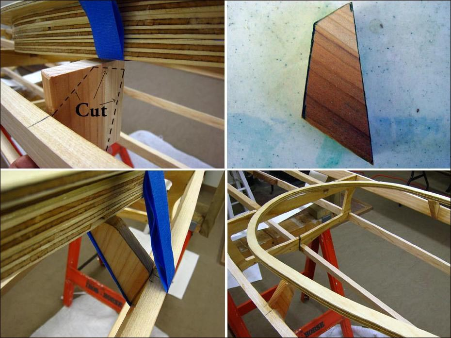

| Coaming (Stanchons) | Menu Previous Page Next Page |
|

Stanchons provide additional support to the coaming. This is necessary during skinning as the coaming is not attached at that time and the skin puts pressure against the light weight base plate and could deform it. A small block of redwood ( 3" X 3" X 5/8" ) is placed against the gunwale about 12" from section 3. The wood block is marked as shown above to indicate the final shape for cutting. After cutting out the stanchons, glue them to the gunwales and coaming base plate. Wrap tape tightly around the gunwales, stanchons, and base plate to hold all in place while the epoxy cures. Mid Cure ( 15min) epoxy is adequate for this small application.
|
|